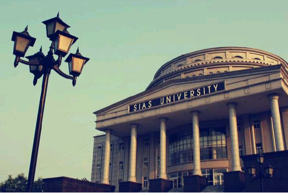
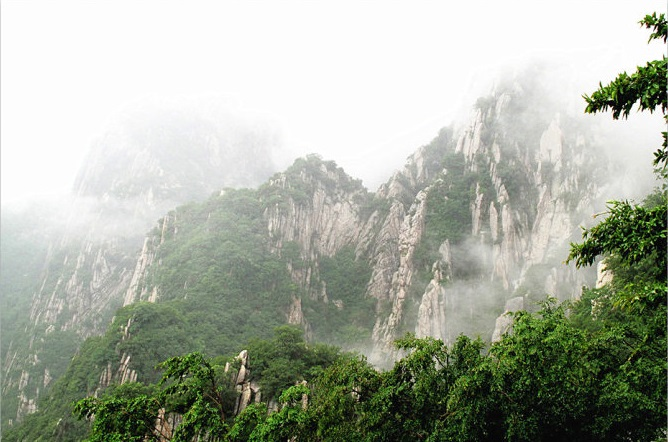

夕林浅娜的个人主页
欢迎来到我的个人主页（@ ^_^ @）
我的简介
姓名：高罗拿
性别：女
星座：处女座
梦想：吃遍天下美食
爱好：画画、动漫、音乐、小说
我的大学
郑州大学西亚斯国际学院是由美国西亚斯集团公司投资，与郑州大学合作，美国堪萨斯州富特海斯州立大学（Fort Hays State University，英文缩写FHSU)协办的中外合作办学机构，是河南省首家被国务院学位委员会批准可以实施境外学士学位教育合作项目的全日制本科院校，也是首批被中国教育部中外合作办学评估合格的高校。
学校位于中国人文始祖黄帝故里河南郑州新郑市，占地面积2200余亩，已建有90余万平方米的风格各异的教学馆舍。欧式现代园林与中国古典园林相结合的校园环境，欧式风格和中国风格相结合的教学楼群，完备的体育、音乐、美术教学场馆设施，既体现了西亚斯中西合璧的办学理念，也彰显了国际化育人环境的时空意识和德、智、体、音、美全面发展的育人思想。置身校园，如穿越于东西方建筑与园林文化的倾情对话之中，中西、古今于一瞬间凝固为立体音乐。青山宁静益智，绿水幽雅润心，给学生创造了浓郁的国际化成长氛围。
我的同学
我的同学呆萌可爱。。。。。。她们都有着让人捧腹偷笑的外号。她们的爱好迥异不同。
鸟人大赛起源于希腊神话，神话中伊卡洛斯借助自制的“翅膀”飞行天际。为了纪念这位“飞行先驱”，每年举办“鸟人大赛”已成为世界上许多地方的传统。别开生面的“鸟人”大赛是著名旅游节——澳大利亚蒙巴节的组成部分，自2010年起就是郑州大学西亚斯国际学院家长访校日活动期间的重头戏，是河南省内高校中具有鲜明特色的校园文化活动。每年鸟人大赛都很有意思，从每个人自制的稀奇古怪的衣服到形态各异的入水姿势，能看到西亚斯人有趣的一面，有机会就来参加吧。

我的家乡
嵩山，古称“外方”，夏商时称“崇高”、“崇山”，西周时成称为 “岳山”，以嵩山为中央左岱（泰山）右华（华山），定嵩山为中岳，始称“中岳嵩山”。嵩山是道教五岳圣地之一，旧时汉族民间广泛崇奉的神祇，即中岳嵩山君神。古称中岳，为中国著名的五岳之一。位于河南省西部，属伏牛山系，地处登封市西北面，是五岳的中岳。嵩山是中华文明的重要发源地，也是中国名胜风景区。2004年2月，嵩山被联合国教科文组织列入世界地质公园。
留言板
有什么想对我说的话，可以联系我呦！
E-mail地址：214861919@qq.com
版权所有 © 2017 GLN 联系我